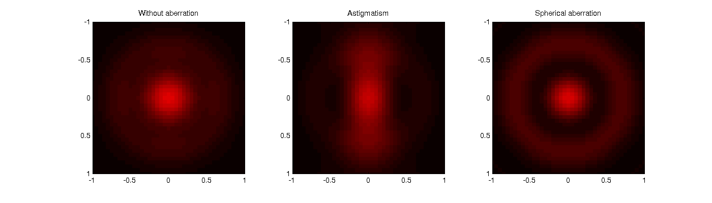
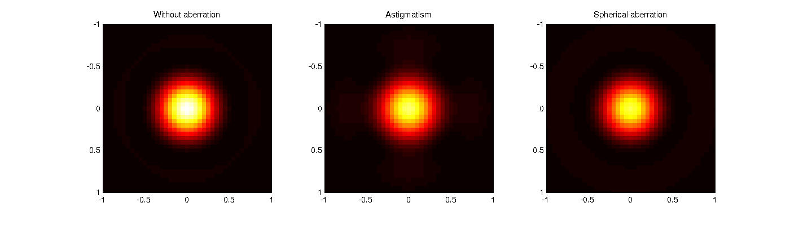
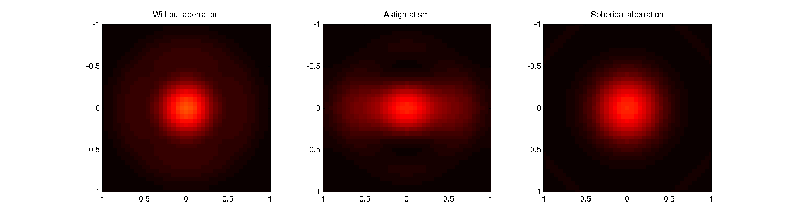

Evaluate accuracy of the Microlith package.
3D image of a point under fluorescent microscope with aberrations. Written by Shalin Mehta, www.mshalin.com, License: GPL v3 or later.
Contents
Set-up simulation grid:
% All quantities are expressed in normalized optical coordinates % One can obtain the physical spatial coordinates like this: % x (physical)= x (optical) * (wavelength/NA). % In normalized coordinates, the jinc function's first zero occurs at 0.61 % and the circular pupil cuts-off at 1. L=10; % Support over which we want to calculate the image. xs=0.05; % Sampling rate in the specimen plane. % To avoid aliasing, specimen should be sampled at 0.2 wavelength/NA % atleast. % Sampling rate in the specimen plane determines extent in frequency % domain. xs=0.1 should suffice as the transfer function fits into the square with % side 2 or (1+S)/sqrt(2) and sampling at 0.1 defines support of [-5 5]. v=-L:xs:L; % Transeverse extent of simulation. u=-2:2*xs:2; % Axial extent of simulation. [vx, vy]=meshgrid(v); % Point specimen. specimen=double(vx==0 & vy==0); % Some other specimens for which analytical image is easy to compute. % % specimen=double(xx==0); %Slit % % specimen=ones(size(xx)); %Transparent.
Case 1: 3D PSF without aberration.
clear params; params.NAo=1; params.wavelength=1; params.nImm=1; params.nEmbb=1; RadioMetricFactor=params.NAo^2*(xs/0.1)^2; % Factor that ensures radiometric consistency. fluor=microlith(v,u); computesys(fluor,'Fluorescence',params); computeimage(fluor,specimen,'CPU');
Case 2: 3D PSF with astigmatism.
clear params; params.NAo=1; params.wavelength=1; params.nImm=1; params.nEmbb=1; params.astigmatism=[1 0]; astig=microlith(v,u); computesys(astig,'Fluorescence',params); computeimage(astig,specimen,'CPU');
Case 3: 3D PSF with spherical aberration.
clear params; params.NAo=1; params.wavelength=1; params.nImm=1; params.nEmbb=1; params.spherical=1; spherical=microlith(v,u); computesys(spherical,'Fluorescence',params); computeimage(spherical,specimen,'CPU');
Display aberrated PSF.
figure(1); set(1,'Position',[100 100 1400 400],'color','white'); colormap hot; for idx=[10 21 30]; clf; subplot(131); imagesc(v,v,fluor.img(:,:,idx),[0 RadioMetricFactor]); axis equal; title('Without aberration'); xlim([-1 1]); ylim([-1 1]); subplot(132); imagesc(v,v,astig.img(:,:,idx),[0 RadioMetricFactor]); axis equal; title('Astigmatism'); xlim([-1 1]); ylim([-1 1]); subplot(133); imagesc(v,v,spherical.img(:,:,idx),[0 RadioMetricFactor]); axis equal; title('Spherical aberration'); xlim([-1 1]); ylim([-1 1]); snapnow; end  